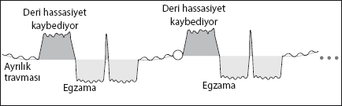

Vitiligo - Egzama
Peki ya kronik deri sorunları?
Aslında onların da önemli bir bölümü beynimizin yarattığı programlar... Bu bölümde derimizin dış kısmı olan epidermis üzerinde çalışan örnek bir programı inceleyelim.
Program bir “ayrılık ve terk edilme” travmasıyla başlıyor. Yine bir benzer döngüdeyiz.

Stres dönemi
Epidermis bu dönemde ayrılığı daha az hissetmek, hassasiyeti azaltmak için hücre kaybediyor. Bu dönemde deride gözle görülür çok büyük bir değişiklik olmuyor. Sadece çok şiddetli ayrılık travmalarında, güçlü stres döneminde beyaz lekeler görülebiliyor. Doktorlar bu duruma “vitiligo” ismini veriyorlar.
Çözüm sonrası
Artık sorun çözüldüğüne göre, deriyi eski haline döndürme zamanı... Aslında deri hassasiyeti geri kazanmak için hücre üretiyor. Bu normalden çok daha hızlı bir yenilenme olduğu için deri kabarıyor ve şişiyor. Bildiğimiz egzama belirtileri bu dönemde yaşanıyor. Doktorların egzantem, dermatit, ürtiker olarak belirttikleri durumlar aslında benzer programların çözüm sonrasındaki belirtileri.
Kitabın başında annesinden birkaç saatliğine ayrılan bir bebeğin, annesinin sonsuza kadar yok olduğunu hissederek ağladığından ama sonra annesinin her seferinde geri dönmesiyle bu duruma alıştığından bahsetmiştik. Tahmin ettiğiniz gibi, beynin yarattığı “biyolojik programların” yaşı yok...
Peki, “ayrılma ve terk edilmeyle ilgili” bu sorunlar neden vücudun sadece belli yerlerinde gerçekleşiyor?
Bu tür sağlık sorunlarının vücudumuzun neresinde yaşanacağı tamamıyla beynimizin ayrılığı neremizde hissettiğiyle ilgili? Özellikle ayrıldığımız kişinin normalde dokunduğu yerler, programların başlayabileceği noktalarımız. Mesela, sürekli sarıldığımız birinden ayrılmak göğüs ve göbek çevresinde, elimizi tutan birinden ayrılmamız elimizde deri sorunlarına yol açabilir.
Ayrıca, ilerleyen sayfalarda vücudun sol veya sağ tarafının beynimiz için ne anlama geldiğini detaylı olarak irdeleyeceğiz. Bu bölümde sizinle paylaşacağım bilgiler derimiz için de geçerli olacak.
Bu arada şunu belirtmek isterim ki, her ayrıldığımız ve çok üzüldüğümüz kişiyle ilgili olarak deri sorunları yaşamamız gerekmez. Ancak, hiçbir şekilde geçirilemeyen deri sorunlarınız varsa ilk bakacağımız nokta ayrılık ve terk edilme travmaları olmalı.
Doğru travmayı yakaladığınızda artık nasıl çözeceğinizi biliyorsunuz...